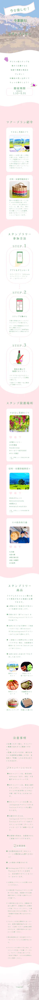

制作範囲 Range
ディレクション / デザイン / コーディング
使用ツール Tool
Figma / VS Code (HTML / CSS / JS)
制作期間 Period
3ヶ月間
制作メンバー Member
6名 後3名
サービス設定 Premise
- 専用アプリ「GPtours」を用いた非接触スタンプラリー。
- 「美酒」と「雑貨」という2つのテーマ別コースを提案。
- スタンプ数に応じたSNS連携型の抽選システムを導入することで、地域の回遊性と拡散性を両立。
ターゲット Target
18歳〜23歳の女子大学生
SNSでの発信を好み、卒業旅行に情緒的で質の高い体験を求める層
目的 Purpose
卒業旅行需要を取り込み、特定地域への送客と認知拡大を図ること。
複数のスポットを巡る仕組みで滞在時間を延ばし、SNSへの投稿を促すこと。
地域の魅力を多角的に発信・蓄積することを目指す。
情報設計 Information
「情緒的な共感」から「具体的な行動」へ繋げる構成。
旅のイメージを膨らませるプラン紹介を優先。
3ステップの参加手順や魅力的な景品を配置することで、参加の心理的ハードルを下げつつ期待感を高める。
デザイン Design
「話に花咲く！リラックス旅」をコンセプトに、春らしいペールトーンと柔らかな曲線でまとめました。
#FFE6E9
#7DB389
手書き感のある書体や水彩風の質感を使い、ターゲットに響くトレンド感と、卒業旅行らしい温かみのある世界観を表現。
その他 Others
下に添付した画像は、スマホのデザイン完成稿です。
